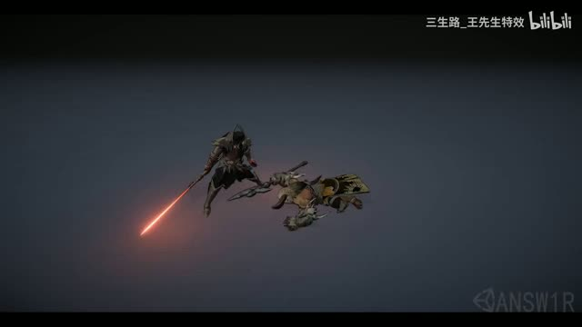
00:01:50 / 案例开始
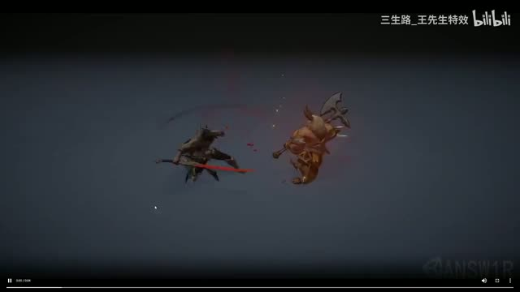
00:02:00 / 问题定位
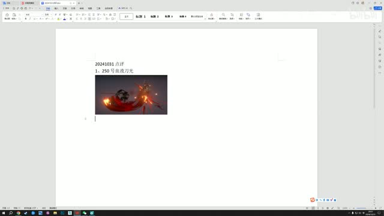
00:03:03 / 颜色讨论
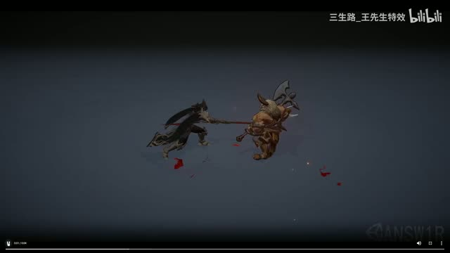
00:04:45 / 收束讨论
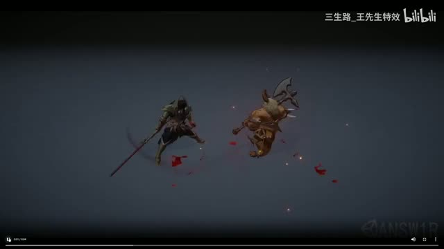
00:06:00 / 招式差异
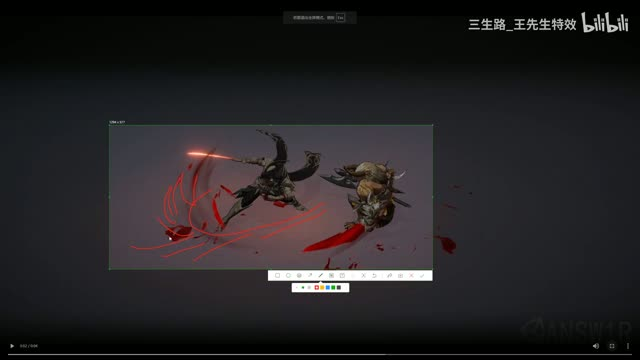
00:12:24 / 改进构想
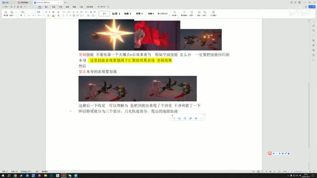
00:14:44 / 总结
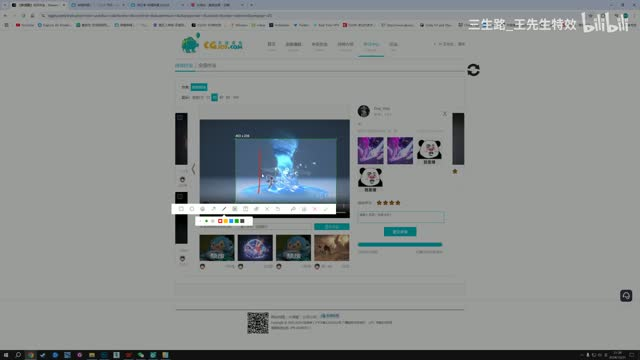
01:39:29 / 案例开始
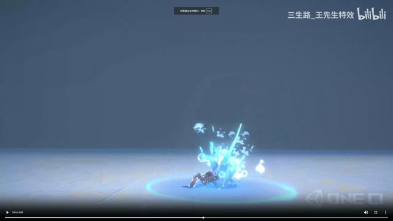
01:40:00 / 镜头讨论
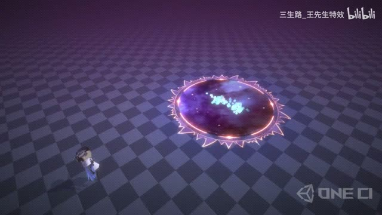
01:41:38 / 节奏问题
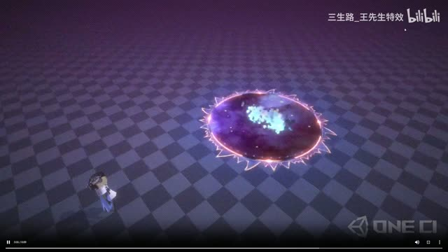
01:42:35 / 递进建议
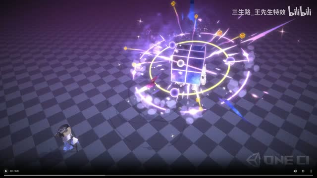
01:43:05 / 领域与第一刀
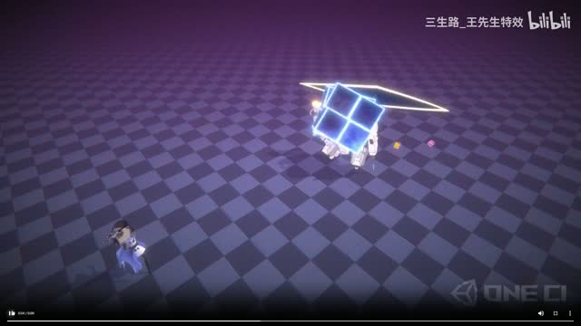
01:45:02 / 空间呼应
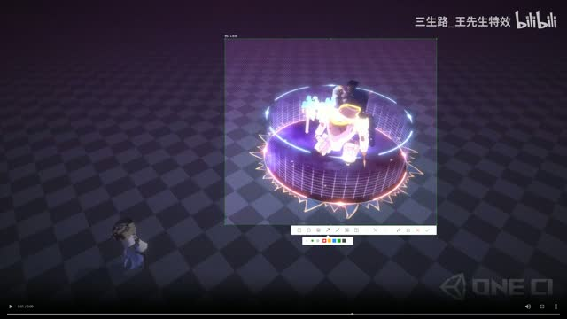
01:47:24 / 扫描交互
01:48:23 / 消散
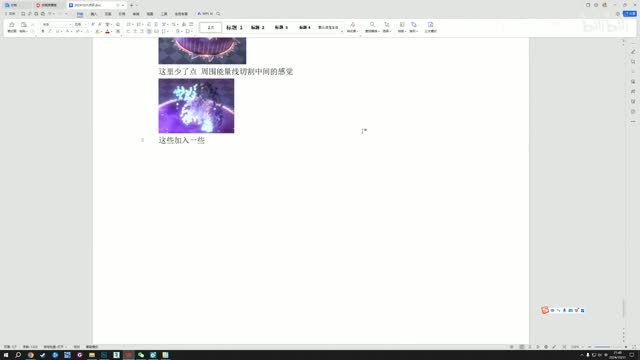
01:49:08 / 总结
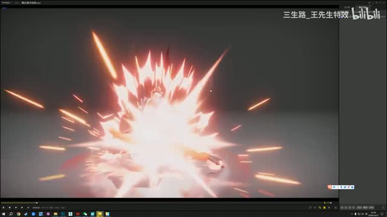
02:55:11 / 案例开始
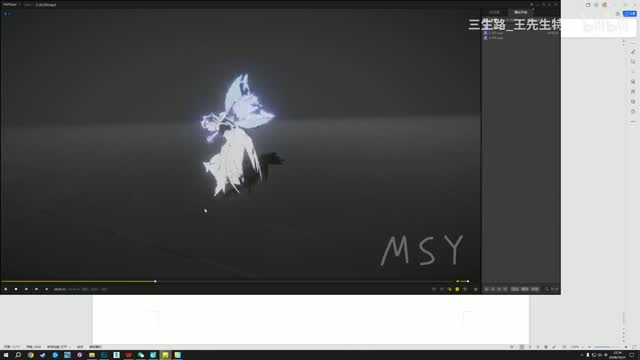
02:55:43 / 轨迹问题
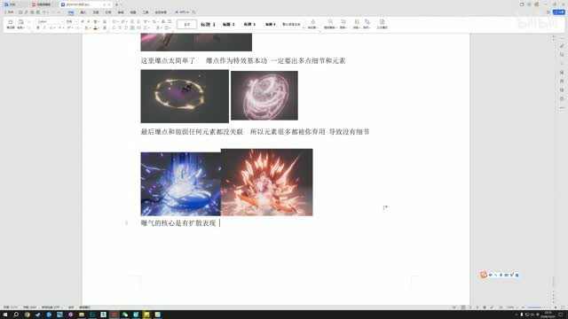
02:56:15 / 焦点讨论
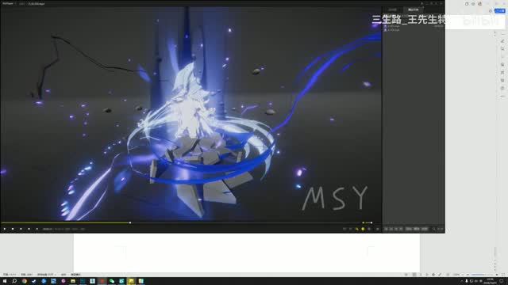
02:57:16 / 正向参考
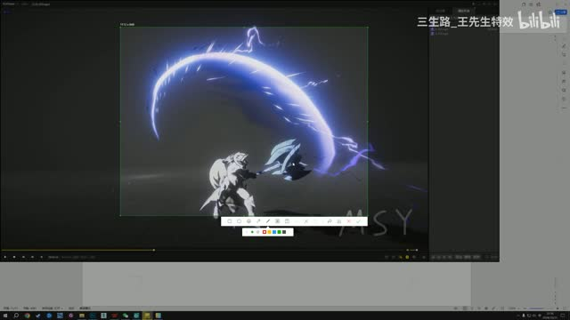
02:57:25 / 卡顿讨论
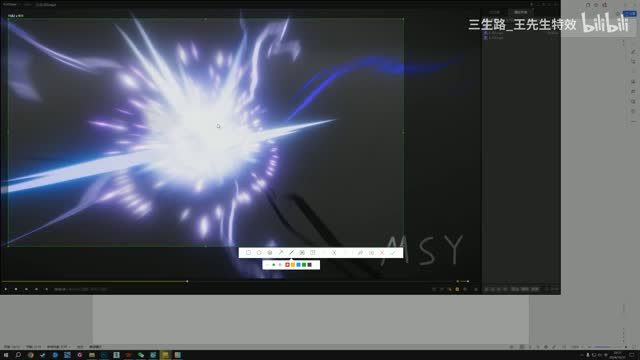
02:58:53 / 纹理问题
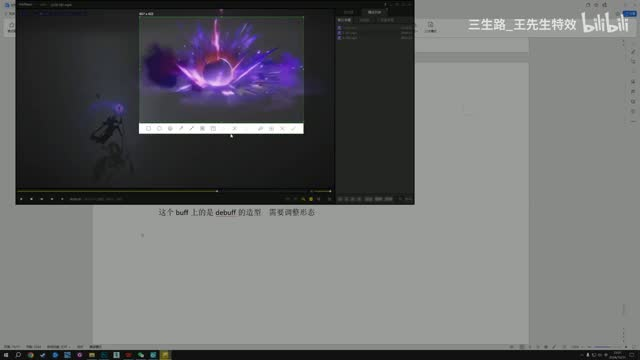
03:02:57 / 正向状态
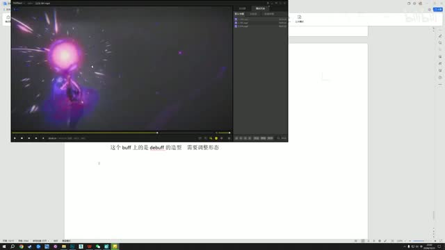
03:03:11 / 转折
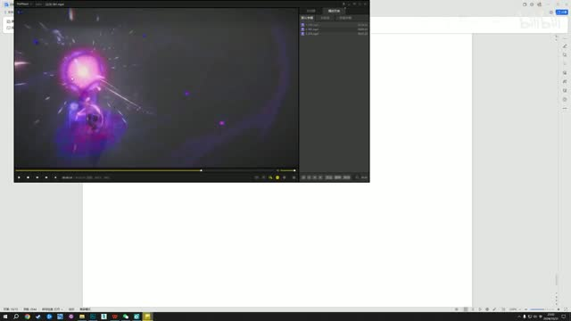
03:03:40 / 规模讨论
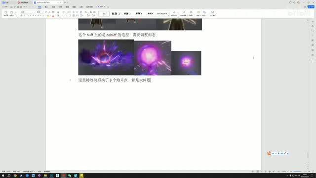
03:04:24 / 收尾